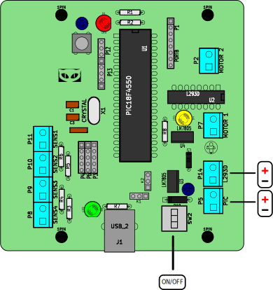

La placa ICARO NP05 está diseñada para trabajar nativamente con el puerto USB de su computadora. Por defecto, toma la alimentación del puerto USB para encender el microcontrolador y arrancar el sistema.
Placa np05.
Con el selector K1 se puede seleccionar la alimentación directa de USB o de una fuente externa.
El primer paso es conectar el cable USB a la placa y encenderla apretando el boton SW2. El LED verde (D2) se encenderá indicando que hay tensión en el circuito que va al microcontrolador. Luego de 3 segundos, se encendera el LED rojo (D1) indicando que el PIC esta operativo.
El LED rojo inidica que el pic se inició correctamente y está ejecutando el código cargado previamente; de esa forma se puede saber si el sistema tiene tensión y está operativo.
Esquema de conexión inicial
Con la placa ya conectada y encendida, podemos ver si la pc reconoce al microcontrolador. Para eso usamos el comando lsusb, el cual debería mostrar en la salida el id de la placa (entre otros).
Bus 001 Device 001: ID 1d6b:0002 Linux Foundation 2.0 root hub
En principio los sitemas GNU/linux bloquean al usuario normal para poder trabajar con los puertos USB directamente. Para tener los privilegios de usuario y poder mandar datos por el puerto USB a nuestra placa hay varias formas, la más sencilla es ser usuario
root y trabajar desde ahí.
Es muy arriesgado trabajar como root, lo ideal es dar permisos de escritura en el puerto mediante udev como se explicará más adelante.
Las placas ICARO np05 trabajan basadas en el bootlader del proyecto Pinguino, por lo tanto todo el desarrollo para este proyecto es aplicable a las placas np05.
Una vez que el sistema está funcionando, podemos comenzar a cargar el firmware que vamos a usar. El firmware es código C++ compilado con SDCC que se puede subir a la placa mediante el programa docker, el cual se puede conseguir del proyecto VASCO PUF.
Sin embargo, las placas ICARO np05 estan preparadas para trabajar de 2 formas: con un firmware estándar previamente cargado para funcionar conectado al puerto usb y usar el programa TurtleArt, o con un firmware a medida diseñado con el programa icaro-bloques
1.1. Esquema eléctrico de la placa NP05
El esquema de conexión eléctrico de las placas Np05 está separado en dos: por un lado la alimentación del PIC (que puede ser directamente desde USB o baterías) y la conexión para el driver L293D (que usa baterías directamente). Para poder seleccionar el voltaje USB o de pilas (para el PIC) se usa el JUMPER (puente) K1 (justo arriba del conector USB de tipo D).
Las borneras P5 y P14 son para conectar las baterías, tanto del pic como para el driver de potecia para motores CC. Es importante ver las conexiones de los polos de las baterías, en el esquema siguiente se puede apreciar cómo deben ir conectados los polos positivos y negativos de las pilas que usemos con la placa.
